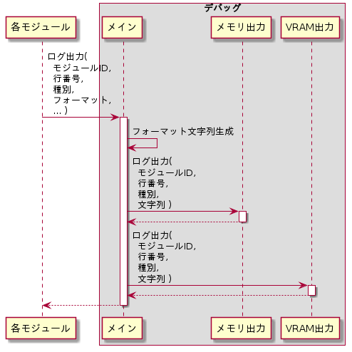

ログ出力
フォーマット文字列に従って文字列を生成し、サブモジュールを呼び出してビデオとメモリにログ出力を行う。シーケンスを以下に示す。

ログ出力シーケンス
ログ出力シーケンス
フォーマット文字列生成
C標準ライブラリ関数printfと同じフォーマット仕様で文字列を生成する。
ログ出力（メモリ出力）
DEBUG_MEM_ENABLEマクロが定義されている場合に、メモリ出力サブモジュールのログ出力機能を呼び出す。
ログ出力（VRAM出力）
DEBUG_VRAM_ENABLEマクロが定義されている場合に、VRAM出力サブモジュールのログ出力機能を呼び出す。